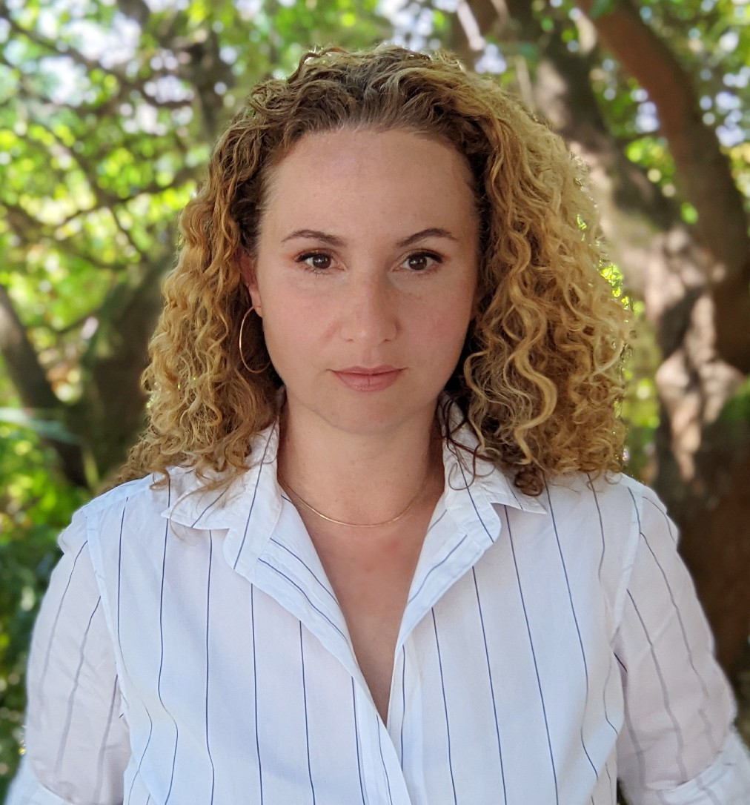

Prof. Minlie Huang
Professor at Department of Computer Science, Institute for Artificial Intelligence, Tsinghua University
Title: The super alignment of of large language models
Time: 9:10 - 9:50 am
Abstract: With the rapid development of large language models such as ChatGPT and GPT-4, artificial general intelligence is getting closer and closer. But “the more intelligent AI is, the more dangerous it is.”, it becomes more and more crucial for us to make sure LLMs are really aligned and safe for our societies. In this talk, the speaker will talk about the super alignment technologies to the super intelligence, including the alignment algorithms, training-free model extrapolation, and a conceptual framework for auto refinement. He will talk about weak-to-strong generalization, scalable oversight, auto red-teaming, exact optimization algorithm for alignment, and so on.
Bio: Dr. Minlie Huang, professor of Tsinghua University, deputy director of the Intelligent Technology and Systems Laboratory, deputy director of the Foundation Model Center of Tsinghua University. He was supported by National Distinguished Young Scholar project and NSFC key project. His research fields include large-scale language models, dialogue systems, and language generation. He authored a Chinese book "Modern Natural Language Generation". He published more than 150 papers in premier conferences and journals, with more than 20,000 Google Scholar citations, and is selected as Elsevier China's Highly Cited Scholars since 2022 and the AI 2000 list of the world's most influential AI scholars since 2020; He has won several best papers or nominations at major international conferences (IJCAI, ACL, SIGDIAL, NLPCC, etc.). He led the development of several pretrained models including CDial-GPT, EVA, OPD, CPM, CharacterGLM. He serves as associate editors for TNNLS, TACL, CL, and TBD, and has served as the senior area chair of ACL/EMNLP/IJCAI/AAAI for more than 10 times. His homepage is located at http://coai.cs.tsinghua.edu.cn/hml/.
Time: 9:10 - 9:50 am
Abstract: With the rapid development of large language models such as ChatGPT and GPT-4, artificial general intelligence is getting closer and closer. But “the more intelligent AI is, the more dangerous it is.”, it becomes more and more crucial for us to make sure LLMs are really aligned and safe for our societies. In this talk, the speaker will talk about the super alignment technologies to the super intelligence, including the alignment algorithms, training-free model extrapolation, and a conceptual framework for auto refinement. He will talk about weak-to-strong generalization, scalable oversight, auto red-teaming, exact optimization algorithm for alignment, and so on.
Bio: Dr. Minlie Huang, professor of Tsinghua University, deputy director of the Intelligent Technology and Systems Laboratory, deputy director of the Foundation Model Center of Tsinghua University. He was supported by National Distinguished Young Scholar project and NSFC key project. His research fields include large-scale language models, dialogue systems, and language generation. He authored a Chinese book "Modern Natural Language Generation". He published more than 150 papers in premier conferences and journals, with more than 20,000 Google Scholar citations, and is selected as Elsevier China's Highly Cited Scholars since 2022 and the AI 2000 list of the world's most influential AI scholars since 2020; He has won several best papers or nominations at major international conferences (IJCAI, ACL, SIGDIAL, NLPCC, etc.). He led the development of several pretrained models including CDial-GPT, EVA, OPD, CPM, CharacterGLM. He serves as associate editors for TNNLS, TACL, CL, and TBD, and has served as the senior area chair of ACL/EMNLP/IJCAI/AAAI for more than 10 times. His homepage is located at http://coai.cs.tsinghua.edu.cn/hml/.

Dr. Scott Wen-tau Yih
Research Scientist at Meta AI Research (previously known as FAIR)
Title: Reliable, Adaptable and Attributable Language Models, Powered by Knowledge
Time: 9:50 - 10:30 am
Abstract: Large language models (LLMs), trained on extensive web data, demonstrate impressive flexibility and capability. Nevertheless, they continue to face practical challenges, including hallucinations, difficulties in adapting to new data distributions, and a lack of verifiability. Retrieval-augmented generation (RAG) has recently emerged as a popular approach to leveraging knowledge, which helps LLMs mitigate these weaknesses to some extent. However, RAG still falls short of providing a comprehensive solution to these problems. In this talk, I will discuss our recent efforts to enhance the factual accuracy and faithfulness of LLMs to the knowledge provided by retrieval. This includes an overview of how we can automatically evaluate the factuality of LLM responses and encourage LLMs to rely more heavily on explicit knowledge when generating responses. Furthermore, I will introduce a novel, efficient semi-parametric language model designed to reduce hallucinations and provide more attribution to their generations. Finally, I will conclude by discussing key open problems and outlining our planned approaches to addressing them in the near future.
Bio: Scott Wen-tau Yih is a Research Scientist at FAIR, Meta. His research interests include natural language processing, machine learning and information retrieval. Before joining Meta, Yih was a Principal Research Scientist at the Allen Institute for Artificial Intelligence (AI2), working on scientific question answering. Prior to that, Yih had spent 12 years at Microsoft Research, working on a variety of projects including email spam filtering, keyword extraction and search & ad relevance. His recent work focuses on continuous representations, neural models for question answering and retrieval, and retrieval-augmented language models; some of his well-known work includes WikiQA, RAG and DPR. Yih received the best paper award from CoNLL’11, an outstanding paper award from ACL’15 and has served as program co-chairs (CEAS’09, CoNLL’14, EMNLP’21) and senior area chairs for NLP (ACL, NNACL, EMNLP, EACL) and ML (ICLR, NeurIPS) conferences.
Time: 9:50 - 10:30 am
Abstract: Large language models (LLMs), trained on extensive web data, demonstrate impressive flexibility and capability. Nevertheless, they continue to face practical challenges, including hallucinations, difficulties in adapting to new data distributions, and a lack of verifiability. Retrieval-augmented generation (RAG) has recently emerged as a popular approach to leveraging knowledge, which helps LLMs mitigate these weaknesses to some extent. However, RAG still falls short of providing a comprehensive solution to these problems. In this talk, I will discuss our recent efforts to enhance the factual accuracy and faithfulness of LLMs to the knowledge provided by retrieval. This includes an overview of how we can automatically evaluate the factuality of LLM responses and encourage LLMs to rely more heavily on explicit knowledge when generating responses. Furthermore, I will introduce a novel, efficient semi-parametric language model designed to reduce hallucinations and provide more attribution to their generations. Finally, I will conclude by discussing key open problems and outlining our planned approaches to addressing them in the near future.
Bio: Scott Wen-tau Yih is a Research Scientist at FAIR, Meta. His research interests include natural language processing, machine learning and information retrieval. Before joining Meta, Yih was a Principal Research Scientist at the Allen Institute for Artificial Intelligence (AI2), working on scientific question answering. Prior to that, Yih had spent 12 years at Microsoft Research, working on a variety of projects including email spam filtering, keyword extraction and search & ad relevance. His recent work focuses on continuous representations, neural models for question answering and retrieval, and retrieval-augmented language models; some of his well-known work includes WikiQA, RAG and DPR. Yih received the best paper award from CoNLL’11, an outstanding paper award from ACL’15 and has served as program co-chairs (CEAS’09, CoNLL’14, EMNLP’21) and senior area chairs for NLP (ACL, NNACL, EMNLP, EACL) and ML (ICLR, NeurIPS) conferences.

Prof. Yulia Tsvetkov
Associate Professor in the Paul G. Allen School of Computer Science & Engineering, University of Washington
Title: Improving the Reliability of LLMs in Socially-Oriented Knowledge-Intensive Tasks
Time: 11:20 - 11:55 am
Abstract: LLMs excel at encoding real-world knowledge and using it for knowledge-intensive tasks. In socially-oriented domains, however, they often resort to hallucinations when the knowledge is implicit, subjective, or evolving. In this talk, I'll propose new directions to improve the reliability of LLMs in high-stakes, socially-oriented, knowledge-intensive tasks: (1) methods to abstain from generating a response when the LLM's internal knowledge is insufficient, and (2) methods to adapt the LLM's knowledge at decoding time and controllably steer it towards informative and more reliable outputs. I'll conclude with a discussion of future directions aimed at empowering LLMs to offer reliable responses on realistically complex, controversial, and socially-sensitive topics.
Bio: Yulia Tsvetkov is an associate professor at the Paul G. Allen School of Computer Science & Engineering at University of Washington. Her research group works on fundamental advancements to large language models, multilingual NLP, and AI ethics. This research is motivated by a unified goal: to extend the capabilities of human language technology beyond individual populations and across language boundaries, thereby making NLP tools available to all users. Prior to joining UW, Yulia was an assistant professor at Carnegie Mellon University and a postdoc at Stanford. Yulia is a recipient of NSF CAREER, Sloan Fellowship, Okawa Research award, and several paper awards and runner-ups at NLP, ML, and CSS conferences.
Time: 11:20 - 11:55 am
Abstract: LLMs excel at encoding real-world knowledge and using it for knowledge-intensive tasks. In socially-oriented domains, however, they often resort to hallucinations when the knowledge is implicit, subjective, or evolving. In this talk, I'll propose new directions to improve the reliability of LLMs in high-stakes, socially-oriented, knowledge-intensive tasks: (1) methods to abstain from generating a response when the LLM's internal knowledge is insufficient, and (2) methods to adapt the LLM's knowledge at decoding time and controllably steer it towards informative and more reliable outputs. I'll conclude with a discussion of future directions aimed at empowering LLMs to offer reliable responses on realistically complex, controversial, and socially-sensitive topics.
Bio: Yulia Tsvetkov is an associate professor at the Paul G. Allen School of Computer Science & Engineering at University of Washington. Her research group works on fundamental advancements to large language models, multilingual NLP, and AI ethics. This research is motivated by a unified goal: to extend the capabilities of human language technology beyond individual populations and across language boundaries, thereby making NLP tools available to all users. Prior to joining UW, Yulia was an assistant professor at Carnegie Mellon University and a postdoc at Stanford. Yulia is a recipient of NSF CAREER, Sloan Fellowship, Okawa Research award, and several paper awards and runner-ups at NLP, ML, and CSS conferences.
Prof. Greg Durrett
Associate Professor at Department of Computer Science, UT Austin
Title: Soft Reasoning for Factual LLMs
Time: 11:55 - 12:30 pm
Abstract: When we ask LLMs questions, we expect them to not just retrieve information, but to synthesize it and explain it to us in a long-form answer. The prevalence of hallucinations and similar mistakes shows that LLMs still fall short at doing this correctly. In limited domains such as mathematical reasoning, “hard” formal reasoners can enforce correctness. However, in “soft reasoning” settings like open-ended question answering, no such tools exist. In this talk, I will argue that LLMs can improve their own soft reasoning if we leverage the right data. I will discuss our work on two key problems: how to ensure LLM outputs are factually grounded in inputs and how to build deductive reasoners over natural language. First, I will describe a series of textual entailment systems that can detect hallucinations from language models. We have found that small language models trained on synthetic data can match the performance of frontier LLMs and outperform approaches encoding linguistic priors. Second, I will discuss work on entailment trees, structures connecting natural language premise statements to derived conclusions. I will describe a challenging new benchmark dataset, MuSR, and show how fine-tuning can elevate LLM correctness beyond chain-of-thought.
Bio: Greg Durrett is an associate professor of Computer Science at UT Austin. He received his BS in Computer Science and Mathematics from MIT and his PhD in Computer Science from UC Berkeley, where he was advised by Dan Klein. His research is broadly in the areas of natural language processing and machine learning. Currently, his group's focus is on techniques for reasoning about knowledge in text, verifying factuality of LLM generations, and building systems using LLMs as primitives. He is a 2023 Sloan Research Fellow and a recipient of a 2022 NSF CAREER award. He has co-organized the Workshop on Natural Language Reasoning and Structured Explanations at ACL 2023 and ACL 2024, as well as workshops on low-resource NLP and NLP for programming. He has served in numerous roles for ACL conferences, recently as a member of the NAACL Board since 2024 and as Senior Area Chair for NAACL 2024 and ACL 2024.
Time: 11:55 - 12:30 pm
Abstract: When we ask LLMs questions, we expect them to not just retrieve information, but to synthesize it and explain it to us in a long-form answer. The prevalence of hallucinations and similar mistakes shows that LLMs still fall short at doing this correctly. In limited domains such as mathematical reasoning, “hard” formal reasoners can enforce correctness. However, in “soft reasoning” settings like open-ended question answering, no such tools exist. In this talk, I will argue that LLMs can improve their own soft reasoning if we leverage the right data. I will discuss our work on two key problems: how to ensure LLM outputs are factually grounded in inputs and how to build deductive reasoners over natural language. First, I will describe a series of textual entailment systems that can detect hallucinations from language models. We have found that small language models trained on synthetic data can match the performance of frontier LLMs and outperform approaches encoding linguistic priors. Second, I will discuss work on entailment trees, structures connecting natural language premise statements to derived conclusions. I will describe a challenging new benchmark dataset, MuSR, and show how fine-tuning can elevate LLM correctness beyond chain-of-thought.
Bio: Greg Durrett is an associate professor of Computer Science at UT Austin. He received his BS in Computer Science and Mathematics from MIT and his PhD in Computer Science from UC Berkeley, where he was advised by Dan Klein. His research is broadly in the areas of natural language processing and machine learning. Currently, his group's focus is on techniques for reasoning about knowledge in text, verifying factuality of LLM generations, and building systems using LLMs as primitives. He is a 2023 Sloan Research Fellow and a recipient of a 2022 NSF CAREER award. He has co-organized the Workshop on Natural Language Reasoning and Structured Explanations at ACL 2023 and ACL 2024, as well as workshops on low-resource NLP and NLP for programming. He has served in numerous roles for ACL conferences, recently as a member of the NAACL Board since 2024 and as Senior Area Chair for NAACL 2024 and ACL 2024.
Prof. Minjoon Seo
Assistant Professor, Kim Jaechul Graduate School of AI, KAIST
Title: Temporal Dynamics of Language Model Retraining
Time: 2:00 - 2:40 pm
Abstract: Many researchers have experienced the difficulty of injecting new knowledge or adapting to a new language (e.g. Korean) during language model (LM) post-training (finetuning). This is rather weird because pretraining and post-training are both just gradient descents with next token prediction loss. A plausible hypothesis is that the “learnability” of an LM is a function of time. In this talk, I will discuss our recent effort on answering this research question by analyzing OLMo checkpoints, and how the results align with recent findings in other works. It is worth noting that if the hypothesis is true, it could mean the scope of what an LM can do through post-training is inherently limited, and the significance of being able to pretrain an LM from scratch could be much bigger than how it is generally perceived.
Time: 2:00 - 2:40 pm
Abstract: Many researchers have experienced the difficulty of injecting new knowledge or adapting to a new language (e.g. Korean) during language model (LM) post-training (finetuning). This is rather weird because pretraining and post-training are both just gradient descents with next token prediction loss. A plausible hypothesis is that the “learnability” of an LM is a function of time. In this talk, I will discuss our recent effort on answering this research question by analyzing OLMo checkpoints, and how the results align with recent findings in other works. It is worth noting that if the hypothesis is true, it could mean the scope of what an LM can do through post-training is inherently limited, and the significance of being able to pretrain an LM from scratch could be much bigger than how it is generally perceived.
Prof. Zhuosheng Zhang
Assistant Professor, Shanghai Jiao Tong University
Title: Flooding Spread of Manipulated Knowledge in LLM-Based Multi-Agent Communities
Time: 3:30 - 4:10 pm
Abstract: As large language models (LLMs) are increasingly deployed in multi-agent systems for applications such as collaborative problem-solving and autonomous negotiation, the security of these systems becomes crucial. This talk delves into the vulnerabilities of LLM-based multi-agent communities to the spread of manipulated world knowledge. We explore how attackers can inject counterfactual or toxic knowledge into a single agent, leading to the unintentional propagation of this misinformation throughout the whole community. Due to LLMs' inherent vulnerability in recognizing and understanding world knowledge, they are prone to accepting manipulated information as true if given plausible evidence. Our findings demonstrate that even subtle manipulations can lead multi-agent communities to adopt false beliefs, such as convincing them that "the Earth is made of strawberries," without explicit prompt manipulation. We emphasize the urgent need for robust defense mechanisms to ensure the reliability of knowledge shared among LLM-based agents and provide future directions in securing these systems against malicious manipulation.
Bio: Zhuosheng Zhang is a tenure-track assistant professor at Shanghai Jiao Tong University. He received his Ph.D. degree and his M.S. degree from Shanghai Jiao Tong University in 2023 and 2020. He was an intern at Amazon Web Services, Microsoft Research Redmond, Langboat Tech, NICT (Japan), and IBM. He has served as a PC member for ARR, ICML, NeurIPS, ICLR, ACL, AAAI, etc. He also served as an action editor or area chair for ACL Rolling Review, LREC-COLING 2024, and ICLR 2023 TinyPapers. His primary research interests include natural language processing, large language models, and autonomous agents. He has published over 60 papers in top-tier conferences and journals, including TPAMI, ICLR, ACL, AAAI, EMNLP, TNNLS, TASLP, and COLING. He has won 1st place in various language understanding and reasoning leaderboards, such as SQuAD2.0, MuTual, RACE, ShARC, and CMRC. He was awarded as an Academic Star at Shanghai Jiao Tong University and was selected as one of the Global Top 100 Chinese Rising Stars in Artificial Intelligence. He won the Excellent Doctoral Thesis of Chinese Information Processing Society (CIPS), WAIC 2024 Youth Outstanding Paper Award, WAIC 2024 YunFan Award: Bright Star, and Baidu Scholarship.
Time: 3:30 - 4:10 pm
Abstract: As large language models (LLMs) are increasingly deployed in multi-agent systems for applications such as collaborative problem-solving and autonomous negotiation, the security of these systems becomes crucial. This talk delves into the vulnerabilities of LLM-based multi-agent communities to the spread of manipulated world knowledge. We explore how attackers can inject counterfactual or toxic knowledge into a single agent, leading to the unintentional propagation of this misinformation throughout the whole community. Due to LLMs' inherent vulnerability in recognizing and understanding world knowledge, they are prone to accepting manipulated information as true if given plausible evidence. Our findings demonstrate that even subtle manipulations can lead multi-agent communities to adopt false beliefs, such as convincing them that "the Earth is made of strawberries," without explicit prompt manipulation. We emphasize the urgent need for robust defense mechanisms to ensure the reliability of knowledge shared among LLM-based agents and provide future directions in securing these systems against malicious manipulation.
Bio: Zhuosheng Zhang is a tenure-track assistant professor at Shanghai Jiao Tong University. He received his Ph.D. degree and his M.S. degree from Shanghai Jiao Tong University in 2023 and 2020. He was an intern at Amazon Web Services, Microsoft Research Redmond, Langboat Tech, NICT (Japan), and IBM. He has served as a PC member for ARR, ICML, NeurIPS, ICLR, ACL, AAAI, etc. He also served as an action editor or area chair for ACL Rolling Review, LREC-COLING 2024, and ICLR 2023 TinyPapers. His primary research interests include natural language processing, large language models, and autonomous agents. He has published over 60 papers in top-tier conferences and journals, including TPAMI, ICLR, ACL, AAAI, EMNLP, TNNLS, TASLP, and COLING. He has won 1st place in various language understanding and reasoning leaderboards, such as SQuAD2.0, MuTual, RACE, ShARC, and CMRC. He was awarded as an Academic Star at Shanghai Jiao Tong University and was selected as one of the Global Top 100 Chinese Rising Stars in Artificial Intelligence. He won the Excellent Doctoral Thesis of Chinese Information Processing Society (CIPS), WAIC 2024 Youth Outstanding Paper Award, WAIC 2024 YunFan Award: Bright Star, and Baidu Scholarship.
- © All rights reserved
- Design: HTML5 UP